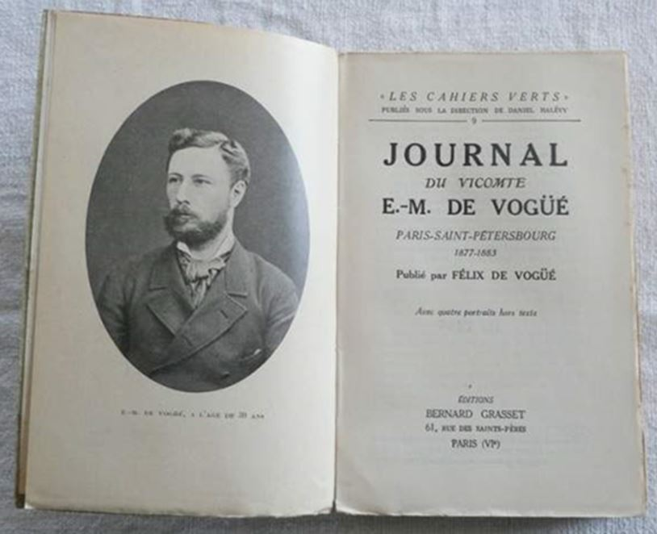

RAISON LITTÉRAIRE DE L’IMPORTATION DE LA LITTÉRATURE RUSSE EN FRANCE
La littérature, selon Vogüé, exprime la société. Elle peut l’améliorer. Cette idée, inspirée de Taine, l’incite à accuser le naturalisme de la décadence morale de France. Il établit un parallèle entre le naturalisme et la société malade, privée de perspectives morales. Le roman russe apparaît comme un contre-feu face au naturalisme de Zola et ses disciples. Les désavantages du naturalisme le mettent encore plus en valeur. Vogüé entreprend la promotion de la littérature russe encore en 1883. Dans la Revue des deux mondes et la Revue bleue sont parus successivement six articles, réunis en 1886 dans le Roman russe. La longue préface-manifeste du livre, publiée séparément le 15 mai 1886 dans la Revue des deux mondes sous le titre « De la littérature réaliste, à propos du roman russe », démontre bien sa visée stratégique au sein des débats littéraires1. Il est évident que c’était une manière d’annoncer l’arrivée de son œuvre majeure qui, dès sa parution, a connu un succès colossal. Christophe Charle dans Paris fin de siècle donne son explication au succès littéraire de E.-M. de Vogüé :
[…] Exposer un manifeste théorique concernant les œuvres à venir, tactique habituelle des avant-gardes, a bien moins de force que promouvoir une esthétique illustrée par des auteurs étrangers déjà morts ou largement reconnus, donc classiques chez eux. Diffuser des romans déjà traduits ou en passe de l’être, analyser des thèmes et des procédés littéraires, faire le portrait psychologique fouillé de figures hors du commun, utiliser l’effet de mystère qui s’attache à l’étranger, au lointain, au barbare, est beaucoup plus payant pour lancer une nouvelle esthétique littéraire2.
Le naturalisme, avec sa vulgarité et son humanité dégradée et simplifiée, est rejeté par la critique dominante, sensible à l’union de l’idéal et du réel3. Cette orientation littéraire se traduit par une violente campagne contre le naturalisme, menée entre autres par la Revue des Deux Mondes qui contribue à sa banqueroute. La revue est accusée de matérialisme, de déterminisme, de pessimisme, de ne pas exercer une saine influence morale sur ses lecteurs4. Le pessimisme et le matérialisme sont les fers de lance de l’attaque entreprise contre le naturalisme. Paul Bourget, par exemple, dans plusieurs essais rédigés autour de 1885, dénonce ce pessimisme et la volonté d’analyse trop poussée de son époque5. L’opinion de l’ambassadeur de la littérature russe en France s’inscrit dans ce contexte. E.-M. de Vogüé reproche aux naturalistes français leur indifférence à la vie intérieure de l’individu, ce qu’il appelle « l’ignorance de la moitié de nous-mêmes et la meilleure moitié6. » Vogüé est choqué par la préséance de la forme comme si le vide existentiel pouvait être comblé par la perfection formelle, qui accapare l’énergie des naturalistes français. Le métier d’écrivain est devenu un bagne :
Ils sont emprisonnés dans leur art et rivés à lui. Un livre qu’ils écrivent leur vaut une maladie. Ils s’y absorbent, s’y énervent, s’y cloîtrent. La recherche d’un mot leur est une torture, l’étude d’une figure leur impose de douloureux efforts cérébraux. Ils vivent dans leur rêve et dans la fierté de leur profession7.
Certes, grâce à ce formalisme scrupuleux, les romanciers français arrivent à satisfaire l’esthétique. Pour Vogüé, « quelque belles qu’elles soient, des œuvres qui ne sont que belles ne serviront guère les intérêts de la race, dont le développement esthétiques, qui la complète, est moins important que le développement moral8». Comme on peut voir, Vogüé refuse des œuvres purement esthétiques destinées à un cercle d’heureux élus. Il se révolte contre cette recherche artistique « prétentieuse, byzantine et glaciale » qui ne s’intéresse point au contenu littéraire9. Pour le vicomte, c’est un signe de décadence. Aussi, il rompt définitivement avec la doctrine de l’art pour l’art toujours en vigueur10. Dans Le Roman russe, il s’interroge sur la différence des impressions que les romanciers russes et français produisent sur le lecteur. Ce sont justement le style et la forme qui font, à son avis, cette différence. Il oppose l’obsession formelle et un manque de profondeur dans le contenu chez les naturalistes français au sacrifice du style qui permet aux réalistes russes de s’effacer devant leurs œuvres11. Ce refus du réalisme français est lié à l’étroitesse de son champ de vision. Son attitude nihiliste amène les écrivains, pessimistes résignés, à mépriser l’homme et à oublier Dieu.
La seconde moitié du XIXe siècle est marquée par le réalisme à la Flaubert, qui « n’a pour les hommes qu’un effroyable mépris, le réalisme sans foi, sans émotion, sans charité, dont les raffinements d’art égoïstes ne rachètent pas le pessimisme foncier12 ». C’est à cet instant de la crise spirituelle que Vogüé publie son Roman russe, message d’espoir pour la France qui n’espère plus.
Ce pessimisme est venu d’Allemagne avec l’œuvre de Schopenhauer, propageant une laïcisation impitoyable de l’individu moderne :
Cet individu déchiré est en proie à l’ennui, anxieux, agressif, irresponsable, esclave de son savoir sous la dépendance de son corps, doutant de toutes les valeurs, se défiant de son esprit comme de son langage, allant irrésistiblement de l’avant parce qu’il est porté par la vie et pourtant passif vis-à-vis de son propre pouvoir […]13.
La philosophie schopenhauerienne a véritablement inspiré de nombreux écrivains. Mais son influence en Russie et en France n’a pas donné les mêmes résultats. Elle a engagé les deux pays sur la voie de l’égoïsme et de l’individualisme avec une seule différence, la Russie a su la surmonter. Des réalistes russes ont absorbé le côté mystique des idées de Schopenhauer qui ne contredisait pas leur engagement religieux. Leur humanité a su maîtriser le pessimiste allemand. Au début, Tolstoï comprenait cette philosophie comme la révélation et a été sérieusement dominé par des idées du philosophe allemand sur l’égoïsme, la volonté, l’absurdité de la vie, la mort14. Il voyait la liberté comme un « sentiment subjectif indispensable bien que tout obéisse à une nécessité dont l’homme ignorera toujours la loi15 ».
Un autre exemple de cette influence est une image littéraire de l’amour. Il s’agit de la représentation de la passion et du désir sexuel comme piège, illusion, mystification. Cette vision tragique des rapports entre les deux sexes est bien représentée dans sa Sonate à Kreutzer16. Au milieu des années 1870, Tolstoï a modifié son interprétation de la vie et a repoussé les idées schopenhaueriennes. L’écrivain a alors vu la vie comme un joyeux devoir. Ce n’est pas la Volonté naturelle qui fait l’homme agir (d’où l’importance de l’égoïsme) mais la Raison comme contenu des valeurs spirituelles17. Ainsi le pessimisme en Russie après avoir fait son chemin dans l’esprit du peuple peut être désigné comme le « pessimisme douloureux18 ». Les naturalistes français n’ont pas pu résister au pessimisme allemand. Cette faiblesse de la France s’explique par sa « maladie » du vide. Le pessimisme, d’après Vogüé, « est un parasite naturel du vide et il habite forcément là où il n’y a plus ni foi ni amour19 ». C’est une banqueroute de l’idéal philosophique. Le pessimisme a inspiré aux œuvres des naturalistes le dégoût de la vie. Selon Vogüé, c’est le « pessimisme matérialiste20 ».
Un des termes clés de l’époque était l’ennui, et le seul trait commun des Français, était « le désir de s’isoler du monde, le mépris des autres21 ». À cette époque, les romanciers français s’éloignaient des affaires humaines, chacun admirant sa propre création littéraire. Taine disait de ce temps : « L’égoïsme brutal ou calculateur avait pris l’ascendant. La cruauté ou la sensualité s’étalaient. La société devenait un coupe-gorge ou un mauvais lieu22. »
La popularité de Schopenhauer en France explique en quelque sorte le succès de la littérature russe. Fatigués du vide et mécontents d’une philosophie et d’une littérature dures à l’homme, les Français recommençaient à sentir le besoin de nourriture spirituelle.
« L’esprit de l’homme a l’horreur du vide, il ne saurait se tenir longtemps en équilibre sur le néant23».
Brunetière, par exemple, très schopenhauerien à la base, rédige de nombreux articles sur la nécessité d’humaniser la littérature contemporaine. Sainte-Beuve, maître du portrait biographique, accuse la littérature française contemporaine de froideur et de manque de compassion. Émile Montégut, moraliste et cosmopolite, voit dans le naturalisme français l’expression d’une société décadente où Dieu est absent24. Il estime que la doctrine littéraire dite réalisme n’a une signification sérieuse et morale que lorsqu’elle émane d’un sentiment chrétien, que la doctrine littéraire du réalisme n’est possible qu’avec le christianisme25. Selon Taine, le christianisme « a une grande paire d’ailes indispensable à l’âme humaine. Toujours et partout, depuis dix-huit cents ans, sitôt que ces ailes défaillent ou qu’on les casse, les mœurs publiques et privées se dégradent26». Au mois de mars 1886, Le Correspondant parle de la nécessité de s’orienter vers la religion pour sortir de l’impasse27. Taine dans son Histoire de la littérature anglaise et Brunetière dans Le Roman naturaliste parlent du manque de sympathie dans la littérature française. La Revue des Deux Mondes exige également plus de sympathie dans la littérature. Ainsi le besoin de la sympathie est une orientation générale de la littérature de l’époque. On voit que le terrain était plus que favorable pour l’acceptation de la littérature russe. Le Roman russe de E.-M. de Vogüé apparaît à un bon moment :
Le vicomte de Vogüé avait profondément senti le véritable désir inconscient du public français, ce désir d’une vie psychique restaurée ; et il avait compris également que les romanciers russes valaient par leur attention au côté intime, mental de la vie. Mais il déclara en outre, pour séduire les âmes parisiennes, que ces romanciers russes s’attendrissent sur leurs personnages. Alors l’enthousiasme surgit28.
Dans son œuvre, Vogüé met en valeur la foi inébranlable des Russes, dont la conception fondamentale est la bonté de la souffrance en elle-même. Il présente l’orthodoxie comme la source de tout progrès29. Jean Bonamour voit la double fonction de l’orthodoxie sur l’exemple de Dostoïevski : « L’affirmation d’une spécificité nationale est le dépassement de cette spécificité conçue comme limitation, car l’orthodoxie devient le synonyme de la vraie religion, vivante et humaine, face à un catholicisme dogmatique et corrompu par l’État30. »
Le besoin des dessous spirituels dans la littérature est inséparable du besoin des renouvellements. Selon Vogüé, c’est le réalisme qui « correspond aux besoins nouveaux des esprits dans toute l’Europe31 ». La France commence à étouffer de son naturalisme. Elle a besoin d’œuvres nouvelles, dit T. de Wyzewa, d’œuvres inouïes, construites en sorte que des sensations, des notions et des émotions y soient parfaitement restituées32. Et cette nouveauté, cette fraîcheur, viennent de la Russie, pays souffrant et retardataire mais pays neuf et puissant. C’est dans la littérature russe que Vogüé voit l’avenir de sa littérature nationale. Il y trouve cet idéal recherché que la littérature française a perdu depuis la laïcisation de la société. Une nouvelle esthétique doit remplacer l’ancienne.
Le roman français « ne tient pas la tête aujourd’hui dans les productions de cet ordre, au moins par l’originalité33 ». Au moment où la France se noie dans le pessimisme, E.-M. de Vogüé parcourt la Russie d’où il rapporte tant de nouveaux sentiments. Ses connaissances de la Russie lui servent de contre-argument pour la littérature nationale. Dans sa critique d’une ironie superficielle des naturalistes français, Vogüé va jusqu’à définir leur romans comme des « grimaces littéraires34». Quoiqu’il écrive, il n’y manque pas de rabaisser les mérites des romanciers français devant ceux des réalistes russes. Dans la préface des Souvenirs de la maison des morts de Dostoïevski, par exemple, il reproche aux Français de réunir rarement deux facultés – la faculté « d’évoquer » et celle « d’analyser» :
[…] Prenez chez nous Victor Hugo et Sainte-Beuve comme les représentants extrêmes de ces deux qualités littéraires ; derrière l’un ou l’autre, vous pourrez ranger, en deux familles intellectuelles, presque tous les maîtres qui ont travaillé sur l’homme. Les premiers le projettent dans l’action, ils ont toute puissance pour rendre sensible le drame extérieur, mais ils ne savent pas nous faire voir les mobiles secrets qui ont décidé le choix de l’âme dans ce drame. Les seconds étudient ces mobiles avec une pénétration infinie, ils sont incapables de reconstruire pour le mouvement tragique l’organisme délicat qu’ils ont démonté35.
Les romanciers russes, malgré leur attardement historique, vont plus loin dans l’exploration de l’être humain. L’esprit chrétien leur permet de répondre mieux à la complexité du réel et aux besoins spirituels du lecteur. « Les Russes portent leurs lecteurs au bien36 ». Vogüé est attiré par les aspects suivants de la littérature russe : compassion envers les autres, amour pour les petits, miséricorde et en même temps sens des responsabilités pour tout le monde. Il est séduit par l’absence complète de l’individualisme dans le sens égoïste du mot car, dans leurs livres, il ne s’agit pas d’une seule âme mais de l’âme collective, dont leurs personnages sont l’incarnation. Il admire chez ces réalistes la naïveté et la simplicité de l’analyse psychologique. À la fois diffus et subtil, le réalisme russe reste toujours naturel et sincère37. Il crée l’impression d’un contact direct, presque mystique avec la vie. Retournez le morceau de bois et vous verrez une icône. Ainsi le sacré apparaît au travers des romans russes38. Ce spiritualisme les diffère des romans français où la vie des personnages ne va guère au-delà des valeurs matérielles. Les romanciers russes créent leurs histoires autour des âmes complexes qui se cachent derrière des conditions sociales et une éducation raffinée. Ces âmes ont des aspirations des plus nobles. Vogüé est impressionné par cette grandeur spirituelle et il l’oppose à la représentation de la bassesse humaine, utilisée par les écrivains français comme le moyen d’attirer l’attention du public. Mais l’être humain, par sa nature, regarde toujours vers le haut. C’est à cause de cette médiocrité supposée de la littérature naturaliste que des lecteurs français apprécient la puissance morale des romans russes. Ils sont émerveillés par une compréhension totale de l’homme intérieur qu’ils n’ont jamais rencontré chez leurs auteurs39. Les Français sont touchés par l’immense pitié des écrivains russes éprouvée pour leurs personnages.
C’est cette compassion, pardonnant tout à leur héros, qui a gagné l’intérêt des lecteurs français40. La meilleure expression de ce pardon absolu, nous la trouvons chez Fiodor Dostoïevski. La plupart des romanciers russes sont pénétrés de cet esprit évangélique, mais aucun ne l’est au même degré que ce « monstre », comme l’appelle Vogüé. Dans Les Souvenirs de la maison des morts, par exemple, il pardonne à ses bourreaux les martyres violents qu’il a subis en prison. Il explique et excuse la brutalité de ces hommes par la perversion qu’entraîne le pouvoir absolu. L’humanité n’est pas au centre des romans naturalistes qui n’ont pas pour objectif d’inciter des lecteurs à philosopher. Le roman russe change leurs habitudes littéraires en leur proposant une autre approche de la lecture. À cette époque, les Français ne demandent à un roman de n’être qu’un passe-temps, une impression de légèreté, un moyen de se déstresser. Ils y cherchent du plaisir, tandis que les Russes y puisent une sagesse de la vie, des idées morales, une raison de vivre. Les écrivains en Russie sont les guides de leur race, les conducteurs d’âmes et leurs gardiens41. Vogüé entrevoit la possibilité d’une acceptation identique en France. À son avis, l’être humain a partout dans le monde les mêmes besoins spirituels. À toute époque le fond de l’être humain ne change pas, il demeure avec son éternel besoin de sympathie et d’espérance. L’âme de chacun a toujours besoin d’une source d’harmonie et de sagesse. Le devoir de guider le peuple, Vogüé l’attribue à la littérature :
Les âmes n’appartiennent à personne, elles tournoient, cherchant un guide, comme les hirondelles rasent le marais sous l’orage, éperdues dans le froid, les ténèbres et le bruit. Essayez de leur dire qu’il est une retraite où l’on ramasse et réchauffe les oiseaux blessés, vous les verrez s’assembler, toutes ces âmes, monter, partir à grand vol, par-delà vos déserts arides, vers l’écrivain qui les aura appelées d’un cri de son cœur42.
Le vicomte pensait les lecteurs français capables d’assimiler les valeurs venues du Nord. L’ont-ils réussi ? C’est un sujet discutable. Nous espérons le développer dans une thèse de doctorat. Mais le fait que Vogüé ait évoqué l’intérêt des Français pour la littérature russe reste irréfutable. Son Roman russe, si fécond par la nouveauté des renseignements qu’il apportait sur les interprètes les plus éloquents et les plus persuasifs de la psychologie du peuple russe, place Vogüé au premier rang des critiques contemporains et lui ouvre les portes de l’Académie française.
CONCLUSION
Du point de vue de la politique internationale, E.-M. de Vogüé a contribué de façon notable à l’élargissement des surfaces de contact entre deux pays. Son Roman russe a accéléré l’instauration de la nouvelle politique francophone ainsi que le mouvement d’échanges commerciaux et industriels. « Un mouvement vers l’Est a été lancé : y participaient également des russophiles, des diplomates et de simples curieux43 ». Son entreprise de promotion de la littérature russe a eu des conséquences cosmopolites. On en trouve les traces non seulement en France chez Bourget, Edouard Rod, Paul Margueritte44, mais également en Allemagne chez Rilke et Thomas Mann, en Suisse chez Robert Walser, en Angleterre, en Espagne, en Hollande, dans les pays scandinaves chez Brandes et Levertin, en Hongrie et d’autres pays de l’Europe de l’est, aux États-Unis et au Canada45.
Dans son Roman russe, Vogüé parle de l’ambiguïté de l’époque : passéiste et progressiste à la fois. Le livre satisfait ainsi à un besoin de conciliation et deviendra par la suite un texte important pour le renouveau moral, vers 1890. Vogüé y passe un message d’espoir face aux doutes et aux inquiétudes de ses contemporains.
Il s’agit, dans la découverte des richesses latentes du peuple russe, d’une réponse à la crise spirituelle encore hantée par le drame de 1870. Vivant dans un monde qui se désintègre, les lecteurs sont séduits par le monde qui se crée. La force du Roman russe réside, de ce point de vue, dans le nouvel esprit qu’il annonce. Nous pouvons donc dire que Vogüé n’introduit pas seulement une puissante littérature en France, comme l’a fait à l’époque Mme de Staël avec la littérature allemande, il la présente comme une bouée de sauvetage pour des âmes françaises se noyant dans le matérialisme de l’école naturaliste. Vogüé est persuadé que le succès de la littérature russe en France s’explique par le besoin de mysticisme et de spiritualisme en tant que contrepoison pour le matérialisme et pas du tout par la mode. Son insistance sur la portée humanitaire de la littérature russe provoque dans le monde de la critique française les commentaires et les controverses les plus passionnés.
La brillante analyse de Eugène-Melchior de Vogüé gagne la faveur du grand public français et le met à la lecture des romans russes. Ce grand interprète de la littérature est le premier à parler de ce talent des Russes à représenter ensemble deux aspects qui constituent la vie : le matériel et le spirituel. La publication de son Roman russe en 1886 est un événement littéraire d’une grande importance. Pour la première fois, un tableau d’ensemble de ce domaine est présenté au public français peu informé et encore peu ouvert aux réalités du monde slave. Thaïs S. Lindstrom appelle ce livre « première représentation de la renaissance idéaliste » qui embrassait tous les domaines de la pensée46. Ce retour à l’idéalisme favorise la monté du symbolisme et la vogue du roman psychologique. Le Roman russe a un grand pouvoir de pénétration, surtout dans la jeunesse. Vogüé en a le témoignage « par des lettres de gens bien divers, des visites de jeunes gens et par des échos qui lui reviennent de partout47 ». Le succès du Roman russe est évident :
On continue à me dire que ma préface a eu une grande pénétration. J’ai reçu un mot de Thureau-Dangin, me disant que j’avais écrit un manifeste et une prophétie, et bien des compliments dans une autre lettre d’A. Duruy. Le vieux peintre Lamy, que j’ai rencontré, m’a assuré que tous ses amis de l’Académie parlaient de moi et se disposaient à me donner leurs voix […] Dimanche chez Gustave Paris j’ai recueilli l’impression que le coup était très fortement frappé sur ce milieu48.
Le Roman russe est devenu une figure légendaire dans l’histoire littéraire française. Après sa publication, on vit un véritable boom de traductions des œuvres venus du Nord. Des romans russes traduits ont envahi les librairies françaises où ils furent immédiatement épuisés49. Il s’agit surtout des romans de L. Tolstoï, qui est mieux compris que tous les autres écrivains réalistes russes. C’est bien Tolstoï qui prend et qui gardera le premier rang dans la faveur du public. Thaïs S. Lindstrom, dans son ouvrage Tolstoï en France, prouve l’augmentation de la popularité de Tolstoï. Elle présente les chiffres de ventes des romans de l’écrivain :
En ce qui concerne la première traduction de Guerre et Paix, elle parut en France en 1874 et 550 exemplaires en furent vendus lors des cinq premières années. Mais lorsque sortit l’étude de Vogüé sur Tolstoï le chiffre de vente, d’après Halpérine-Kaminsky, dé- passa 20 000 pour cette seule année50.
Toutes ces raisons du succès du Roman russe expliquent son actualité. Le jugement de Vogüé sur les écrivains russes reste le plus clairvoyant et le plus éloquent qui ait jamais été prononcé en France. Le Roman russe, selon Edmund Gosse, est un « ouvrage dans lequel la critique atteint sa fonction la plus élevée et devient une création littéraire géniale51 ». Un style riche, varié et en même temps simple, une narration qui éveille la curiosité, une force persuasive de l’écriture, le manque de « critical insight » dont parle Wellek52, tous ces éléments assurent au Roman russe une vie éternelle et la supériorité sur tous les autres critiques de la littérature russe de l’époque. De nombreuses rééditions de ce livre (dix-huit éditions avant 1927) témoignent bien de sa demande. Il est également révélateur que Le Roman russe a été traduit deux fois en anglais : The Russian Novelists (Boston 1887) et The Russian Novel (London 1913), et partiellement traduit en russe : Sovremennye russkie pisateli (Quelques écrivains russes contemporains) (Moscou, 1887).
La contribution majeure du Roman russe dans un rapprochement politique et intellectuel entre la France et la Russie met son auteur au premier plan parmi les autres intermédiaires de son époque. Vogüé voulait sauver la France. Mais il n’a réussi qu’à « la sortir pour quelques temps du marasme53 ».
A.G.
1. Christophe Charle, Paris fin de siècle. Culture et politique, Paris, Seuil, coll. « L’Univers historique », 1998, p. 180
2. Ibid.
3. Ibid., p. 180-181.
4. Magnus Röhl, op. cit., p. 46.
5. Ibid. 216
6. Eugène-Melchior de Vogüé, Le Roman russe [1886], op. cit., p. 47.
7. Raymond Pouilliart, Le Romantisme : 1869-1896, Paris, Arthaud, 1968, t. III, p. 114.
8. Edouard Rod, op. cit., p. 285.
9. Eugène-Melchior de Vogüé, Lettres à Armand et Henri de Pontmartin (1867-1909), Paris, Plon, 1922, p. 113 (lettre datée du 30 décembre 1883).
10. Edouard Rod, op. cit., p. 286.
11. Eugène-Melchior de Vogüé, Le Roman russe [1886], op. cit., p. 291.
12. Ibid., p. 9-29.
13. Anne Henry (éd.), Schopenhauer et la création littéraire en Europe, Paris, Méridiens Klincksieck, 1989, p. 12.
14. Dmitrij Merežkovskij, Tolstoj i Dostoïevskij [Tolstoï et Dostoïevski], M., 1995, p. 24. Selon Tolstoï, « si des maladies et la mort n’ont pas encore touché nos proches et nous-mêmes aujourd’hui cela se fera demain et il ne restera de nous que la puanteur et le ver. Toutes mes affaires s’oublieront tôt ou tard, et je disparaîtrai dans le néant. Pourquoi alors me donner tant de peine ? Comment l’homme peut-il vivre sans le comprendre ? C’est cela qui m’étonne tant ! »
15. Anne Henry, op. cit., p. 54.
16. Ibid., p. 58.
17. Lev Tolstoj v vospominanijax sovremennikov [Léon Tolstoï aux yeux de ses contemporains], M., 1960, t. I, p. 156. « La Raison efface la contradiction de l’égoïsme […] ».
18. Eugène-Melchior de Vogüé, Le Roman russe [1886], op. cit., p. 53.
19. Ibid., p. 52.
20. Ibid., p. 53.
21. Edouard Rod, op. cit., p. 272.
22. Paul Bourget, Essais de psychologie contemporaine [1885], Paris, Gallimard, coll. « Tel », 1993, p.443.
23. Eugène-Melchior de Vogüé, Le Roman russe [1886], op. cit., p. 299.
24. Magnus Röhl, op. cit., p. 46.
25. Emile Montégut & George Eliot, « Le Roman réaliste en Angleterre. Adam Bede », La Revue des Deux Mondes, 15 juin 1859, p. 867-897.
26. Paul Bourget, op. cit., p.443.
27. « Du pessimisme littéraire », Le Correspondant, 25 mars 1886, p. 988- 1006.
28. « Les Russes, notes », Revue Indépendante, janvier 1887, cité par Paul Delsemme, op. cit., p. 298.
29. Eugène-Melchior de Vogüé, Le Roman russe [1886], op. cit., p. 43.
30. Jean Bonamour, op. cit., p. 11.
31. « Revue Critique », Le Correspondant, t. 108 (nouvelle série), 1886, p. 758.
32. Téodor de Wyzewa, « Notes sur la littérature wagnérienne et les livres en 1885-1886 », Revue Wagnérienne, 8 juin 1886, p. 50-51.
33. « Revue Critique », Le Correspondant, op. cit., p. 759.
34. Fiodor Dostoïevski, op. cit.
35. Ibid.
36. Magnus Röhl, op. cit.
37. Eugène-Melchior de Vogüé, Le Roman russe [1886], op. cit., p. 301.
38. E. Etkind, G. Nivat, I. Serman & V. Strada (éd.), Histoire de la littérature russe. Le XIXe siècle : Le temps du roman, Paris, Fayard, 2005, p. 10.
39. « Revue Critique », Le Correspondant, op. cit., p. 758.
40. Thaïs S. Lindstrom, Tolstoï en France (1886-190), préf. de J.-M. Carré, Paris, Institut d’études slaves, coll. « Bibliothèque de l’Institut français de Leningrad » continuée par « Bibliothèque russe de l’institut d’études slaves », t. XXV, 1952, p. 28.
41. Eugène-Melchior de Vogüé, Le Roman russe, op. cit.
42. Edouard Rod, op. cit., p. 288.
43. Ibid., p. 12.
44. Henry Bordeaux, « Le Comte Léon Tolstoï », Le Monde latin et le monde slave, 1er février 1894, p.100.
45. Magnus Röhl, op. cit.
46. Thais S. Lindstrom, op. cit., p. 28.
47. Eugène-Melchior de Vogüé, Lettres à Armand et Henri de Pontmartin (1867-1909), op. cit., p. 133 (lettre datée du 26 mai 1886)
48. Lettre inédite à sa femme datée du 26 mai 1886, cité par Magnus Röhl, op. cit.
49. Magnus Röhl, op. cit.
50. Thaïs S. Lindstrom, op. cit., p. 29.
51. Edmund Gosse, « Count Lyof Tolstoi », The Contemporary Review, 94, sept. 1908, p. 272.

Partager cette page